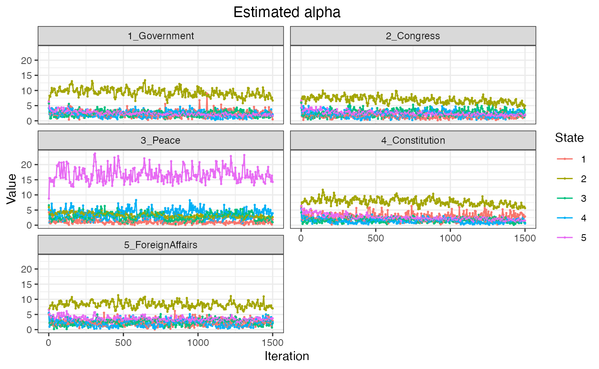

Researchers are often interested in investigating how the prevalence of topics change over time. The keyATM can use time stamps for the prior for document-topic distribution through Hidden Markov Model (Chib 1998).
Section 4 of Eshima et al. (2020) explains the dynamic keyATM in details. As explained in keyATM Covariates, we recommend researchers to construct a numeric or an integer vector of time stamps after preprocessing texts.
Preparing time index
Please read Preparation for the reading of documents and creating a list of keywords.
We use the US Presidential inaugural address data we prapared (documents and keywords).
# Get meta information (time stamp) vars <- docvars(data_corpus_inaugural) head(vars)
## Year President FirstName Party
## 1 1789 Washington George none
## 2 1793 Washington George none
## 3 1797 Adams John Federalist
## 4 1801 Jefferson Thomas Democratic-Republican
## 5 1805 Jefferson Thomas Democratic-Republican
## 6 1809 Madison James Democratic-Republican# Divide by a decade # Timestamp should start with 1 (the variable "Period") vars %>% as_tibble() %>% mutate(Period = (vars$Year - 1780) %/% 10 + 1) -> vars_period vars_period %>% select(Year, Period)
## # A tibble: 58 x 2
## Year Period
## <int> <dbl>
## 1 1789 1
## 2 1793 2
## 3 1797 2
## 4 1801 3
## 5 1805 3
## 6 1809 3
## 7 1813 4
## 8 1817 4
## 9 1821 5
## 10 1825 5
## # … with 48 more rowsWe pass the time index to the keyATM() function, specifying the number of hidden states with the num_states in the model_settings argument.
out <- keyATM(docs = keyATM_docs, no_keyword_topics = 3, keywords = keywords, model = "dynamic", model_settings = list(time_index = vars_period$Period, num_states = 5), options = list(seed = 250))
We can use the top_words(), top_docs(), plot_modelfit(), plot_alpha(), and plot_pi() functions as in the base keyATM.
top_words(out)
## 1_Government 2_Congress 3_Peace 4_Constitution 5_ForeignAffairs
## 1 power great world [✓] states united
## 2 made union peace [✓] public country
## 3 now every new government war [✓]
## 4 laws [✓] one freedom [✓] constitution [✓] nations
## 5 law [✓] congress [✓] america citizens best
## 6 many duty let rights [✓] foreign [✓]
## 7 executive [✓] powers work interests within
## 8 far policy one state duties
## 9 office whole know national confidence
## 10 order political history administration free
## Other_1 Other_2 Other_3
## 1 people just nation
## 2 government country time
## 3 spirit first american
## 4 among principles every
## 5 much common men
## 6 progress well life
## 7 system make justice
## 8 service equal great
## 9 yet republic years
## 10 force like humanSince each state has a unique prior for the document-topic distributions, the plot_alpha() function produces a different figure from the base keyATM.
fig_alpha <- plot_alpha(out) fig_alpha

Finally, we can plot the time trend of topics with the plot_timetrend() function. With the time_index_label argument, you can label each time index. Note that store_theta option in the keyATM() function should be TRUE to show 90% credible intervals.
out <- keyATM(docs = keyATM_docs, no_keyword_topics = 3, keywords = keywords, model = "dynamic", model_settings = list(time_index = vars_period$Period, num_states = 5), options = list(seed = 250, store_theta = TRUE, thinning = 5)) fig_timetrend <- plot_timetrend(out, time_index_label = vars$Year, xlab = "Year", width = 5) fig_timetrend